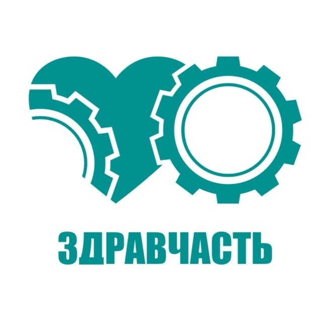
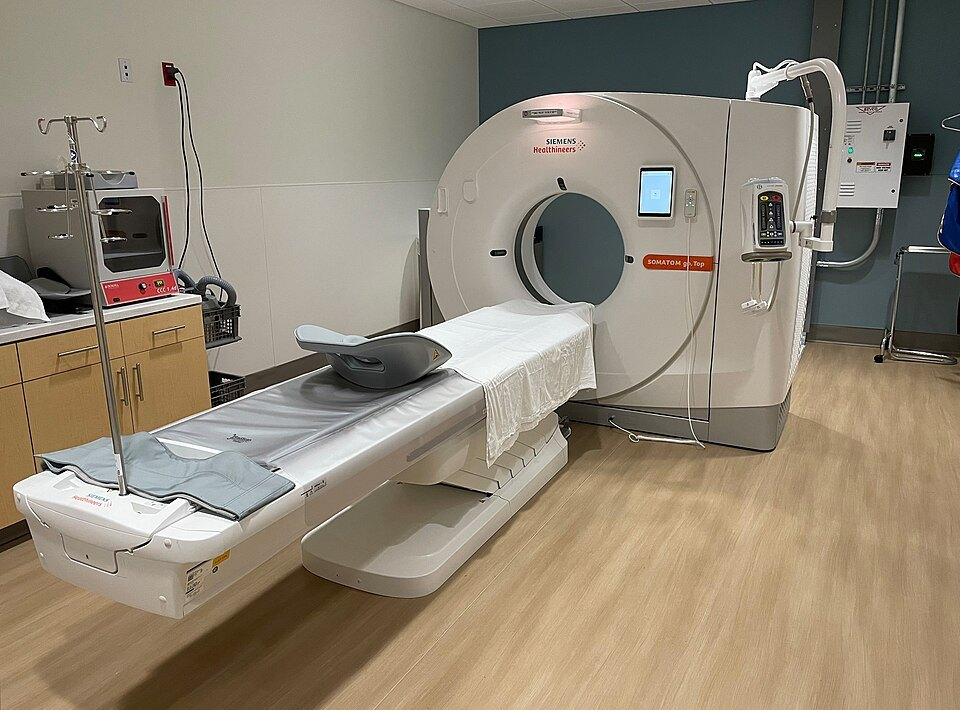
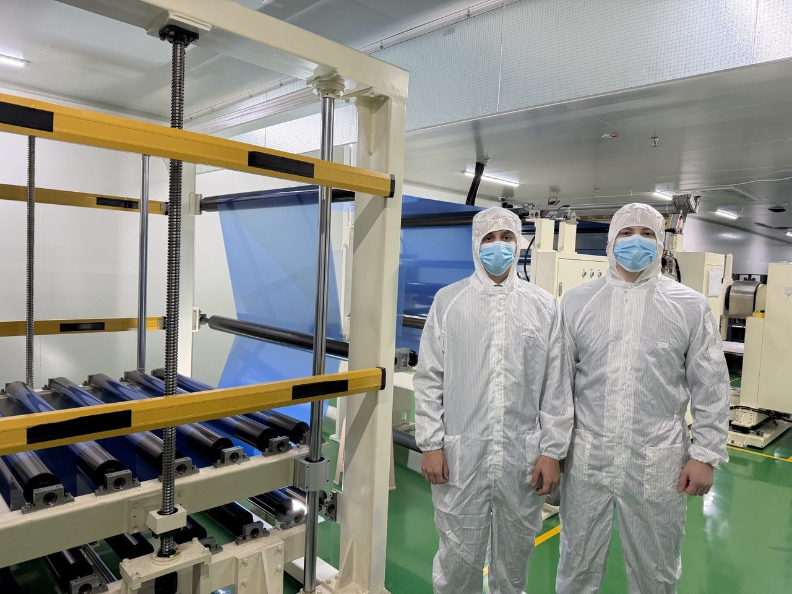
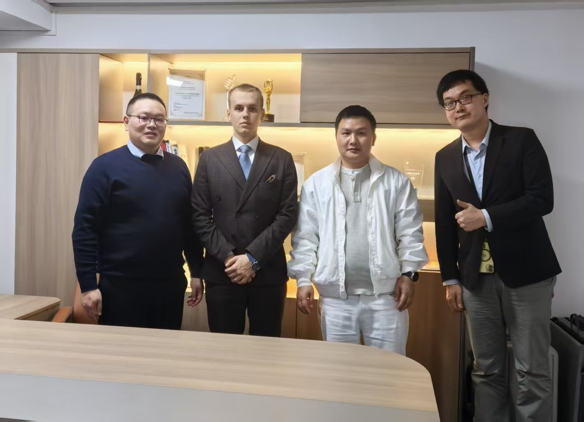
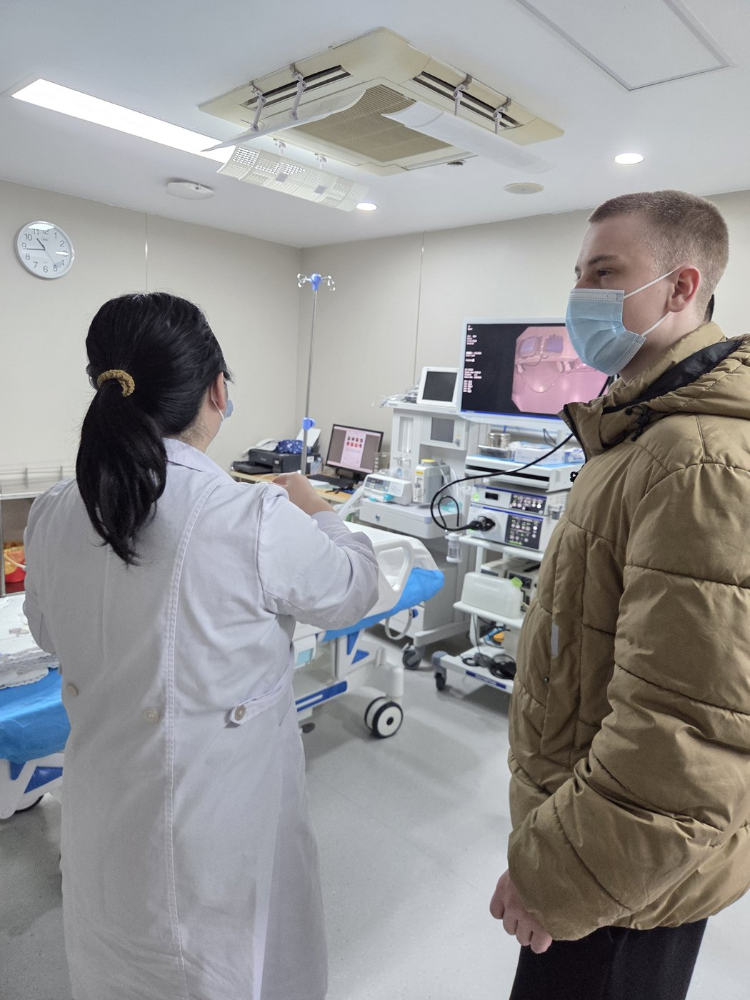
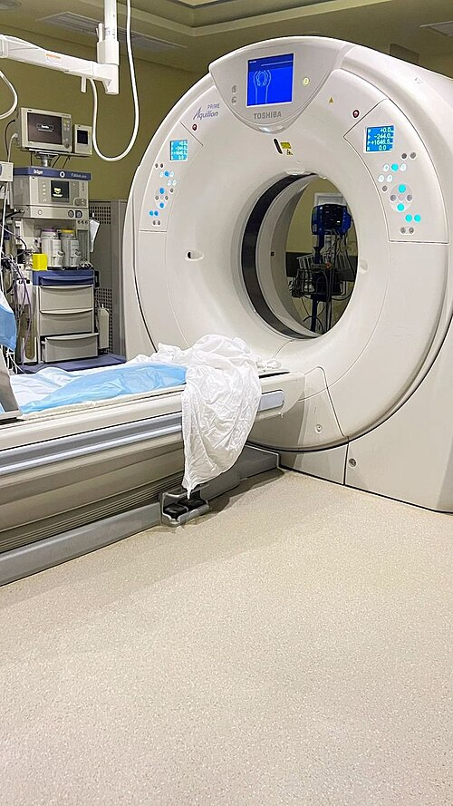

Вы присылаете позицию
Укажите артикул и модель оборудования в письме или при звонке.

ЗДРАВЧАСТЬЗапчасти для МРТ и КТ Связаться ↗Запасные части для МРТ и КТ. Помогаем подобрать позицию по артикулу, уточнить совместимость и согласовать поставку для вашей организации.

Специализация на диагностическом оборудовании
Артикул и применимость проверяем отдельно
Работаем с организациями и ИП, кроме бюджетных
Поверните схематичную 3D-модель и разберите четыре узла. При открытии появятся связанные детали и инструменты.
Нажмите на узел. Модель раздвинет элементы, а окно покажет позиции каталога.
Первые позиции электронного каталога. Характеристики и применимость конкретного изделия уточняются по маркировке и документам.
За многолетнюю работу мы выстроили взаимодействие с сетью производственных партнёров. Это помогает искать специализированные компоненты и обсуждать поставку под конкретную задачу.




Показываем контекст, в котором используются специализированные компоненты. Снимки общего вида иллюстрируют отрасль и не подтверждают связь с конкретным поставщиком или моделью оборудования.
Обсудить ваш запрос ↗Укажите артикул и модель оборудования в письме или при звонке.
Уточняем исполнение, применимость и документы для предложения.
Стоимость, срок и гарантия фиксируются индивидуально вне сайта.
Свяжитесь с нами, чтобы обсудить нужную позицию и условия поставки.
Телефон, рабочая почта и юридические сведения пока не предоставлены для макета.